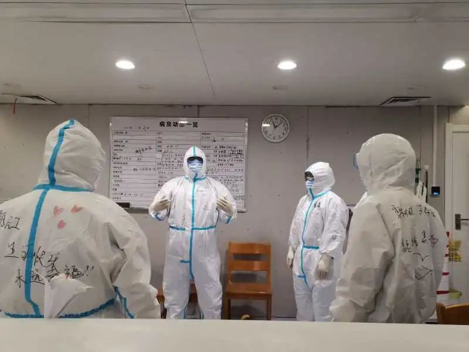

援鄂心理医生：疫情之下，不能简单对人进行道德评价
原文链接 备份链接 设在新冠肺炎定点医院里心理咨询室。 记者：杨舒鸿吉 “ 在疫情高度紧张的时候，如何在保证自身安全的前提下，以最有效的办法进行心理干预，此前并无经验可循。能不能行得通，全靠自己摸索。 ” 新冠肺炎疫情在湖北省爆发之后，身 …
澎湃新闻记者 王选辉 实习生 郑旭
过去一段时间，不少援助湖北的医疗队已经开始配备专门的心理医生，专门为医护人员做心理辅导和危机干预，郑一雄就是其中的一员。
郑一雄医生是厦门市仙岳医院的精神科副主任医师、心理治疗师，同时他也是福建省心理危机干预二队成员、厦门市应对新冠肺炎疫情心理危机干预小组专家组成员，2月20日他跟随厦门医疗队前往武汉。

郑一雄 本文图均为受访者供图
在这个特殊的时期，郑一雄大部分时间里通过视频及电话连线等方式与前线的医务人员沟通，为医护人员及患者缓解心理压力，放松心情，提供心理帮助。
郑一雄医生告诉澎湃新闻（www.thepaper.cn），援鄂一线医护人员长时间高强度的工作压力及被感染的风险，加上原有的生活节奏被打乱，有相当一部分队员出现失眠，有的甚至整夜无眠，也有的出现紧张、恐惧、焦虑等表现。部分医护人员工作过了急性应激期，如果没有很好处理情绪，可能出现焦虑障碍、抑郁，也可能出现创伤后应激障碍等。
郑一雄医生建议，参与一线的医护人员要尽快调整好作息，合理去表达自己的情绪，保持好的睡眠状态及饮食。如确实有出现心理方面的问题导致无法自己调解的，应及时找心理专业人士进行干预和治疗。

郑一雄在病房里，给护士做放松训练。
【对话】
焦虑和睡眠障碍是主要问题
澎湃新闻：出于什么原因考虑在随行的医疗队中配备心理医生？
郑一雄：1月27日，国家卫健委印发《新型冠状病毒感染的肺炎疫情紧急心理危机干预指导原则》，明确了确诊重症患者、一线医护人员及相关人员是干预的一级人群。这类人群出现心理危机的可能性更大。
2月9日厦门卫健委派出第一批援鄂厦门医疗队出征武汉抗击疫情，后发现有一些队员出现了一些应激的反应，主要集中在睡眠问题以及一些焦虑问题。所以之后的援助湖北的医疗队中增加了我们心理医生来随队，为医护人员提供一些心理帮助。
澎湃新闻：您的工作模式是怎样？
郑一雄：来到武汉以后基本上是24小时待命，主要是了解一线人员的心理健康状态，及时识别高危人群，避免极端事件的发生，并针对一线医务人员出现心理方面的问题我们会及时进行处置，及时为一线人员解压，放松，及提供心理支持及帮助。当然，有些病人如果有一些心理问题及相关问题我们也会帮助处理。
澎湃新闻：他们主动来找你，还是你主动与医务人员他们接触？
郑一雄：都有，我们定期通过视频，做些宣教课件，开展小组辅导等，鼓励各个队员互帮互助，互相支持及时了解队员的情况，并主动提供我们的联系方式。慢慢地，医护人员知道随队的医生中有心理医生后，会主动联系我们做心理咨询，我们主要通过视频面对面的形式进行咨询。近期咨询的人数会慢慢增加。
澎湃新闻：主要的心理反应集中在哪里？
郑一雄：这么多天观察下来，我遇到睡眠方面的问题占多数，因为工作强度大，进病房需要一层又一层的防护服，这种情况下工作强度是很大的，下班后也都是一个人隔离在房间了，不能像往常一样出门、会友、逛街，不能及时舒缓自己的情绪，生活上的节奏完全打乱。
很多人来了以后就出现失眠，多表现入睡困难、早醒，严重的整夜无眠，还有就是一些焦虑、恐惧的情绪，毕竟面对新冠病毒这个无形的对手，工作时无形的压力油然而生，有些出现过度警觉，甚至感觉病毒无处不在，不敢触碰任何东西。
澎湃新闻：应激反应的强弱和什么因素关系会比较大？
郑一雄：主要和人的个性以及应对方式关系比较大。一些医护人员心态较好相对来说会自我调整比较快，一些人因为处于高压环境中缺乏正确的调节应对方式就有可能心理问题相对会突出一些。不同群体或者不同科室之间的反应可能需要等到疫情结束之后我们对数据进行一定的分析才方便得出结论。
澎湃新闻：心理医生可能更多的是面对面的观察，那为什么主要是通过视频进行沟通？
郑一雄：首先可能是考虑到安全性的问题吧，其次是一个效果的问题。我来到武汉期间曾经去过两次的重症病房，需要穿着一层又一层的防护服，还要带着护目镜，面屏，与患者的沟通时他们看不清楚我们的面部表情，感受不到我们的共情，会影响到心理治疗的效果。
做咨询往往需要比较长的时间，一般需要半小时到一小时的时间，穿着防护服长时间的沟通会出现缺氧，对心理治疗师来讲也是不小的挑战，所以我们更多的选择视频沟通的方式。
直接面对患者压力大
澎湃新闻：我们知道，重症医生和发热门诊这些科室直接接触的医生应该算是高危人群，他们的心理问题是不是相对更多或者更突出？
郑一雄：这是肯定的，国家之前发布的《新型冠状病毒感染的肺炎疫情紧急心理危机干预指导原则》中将这次疫情心理干预的人群分为四级，其中确诊及重症及以上患者、疫情防控一线的医护、疾控和管理人员等属于心理危机干预的一级人群，高压之下他们相对来讲更可能出现心理危机。
澎湃新闻：重症医生这类人群和一般人的心理问题是否不太一样？
郑一雄：对，因为他们必须直接面对肺炎患者，本身疫情的特殊性和传染性，他们本身就存在暴露的风险，对于医护人员所造成的心理压力蛮大的。包括治疗的过程中，存在比较高的传染风险，接触过程中会出现患者体液的喷溅以及咳痰，都可能会咳到医护人员身上，这些都加大了他们被感染的风险。
此前病人不断攀升，治疗的压力越来越大，一些医生会出现除了之前所讲的失眠和焦虑外，随着时间的推移，还可能会出现恐惧、抑郁，有的人可能会出现创伤性的应激障碍。
澎湃新闻：严重的案例会到什么程度？
郑一雄：有些严重的案例会整宿都没办法睡觉，没有休息的那种状态，会影响每天的正常工作，而且得不到好的休息，身体的免疫力也会下降，增加被感染的风险。
澎湃新闻：如何对他们进行干预？
郑一雄：一般来讲，出现情绪及心理方面问题就会影响到他们正常的工作和生活。及时进行干预，帮助他们及时调整适应达到尽快恢复正常的状态是心理危机干预的原则。主要工作是通过帮他们舒缓，解压，指导他们正确识别面对自己的不良情绪，并引导他们合理表达宣泄自己的情绪，做好有效的倾听，支持抚慰，教给他们放松情绪的技巧，提高自我照料的能力来帮助他们尽快度过应激反应。
如果通过调整无法恢复的，明显影响正常工作生活的，我们会建议用一些药物的帮助进行辅助。还有很多医护人员是因为过度疲劳导致的心理问题，我们会建议他们进行一个调休，待状态调整后再重返岗位，人体本来就需要一个更好的休息才能够良好的工作。
澎湃新闻：是否也有给患者进行一些心理干预？
郑一雄：对，因为这次疫情的影响，患者的心理问题会比一般人大得多，他们可能焦虑等心理问题也会更加严重。和医护人员一样，他们的也会出现焦虑、失眠以及一些情绪的反应，严重的话可能会精神异常的表现。
学会自我调解
澎湃新闻：对他们进行干预的过程中有没有什么特殊的方法？
郑一雄：做心理干预的主要是倾听他们的诉求、接纳他们的情绪，以心理上的支持和安抚为主。值得关注的是患者和医护人员之间的沟通，因为两者本身都是处于焦虑和高强度的状态。我们后期针对这个做了心理手册和安心卡等小物品，放在病区里来促进医护人员和患者之间的沟通。
澎湃新闻：咨询前和咨询后的状况会不会有变化？这些问题会长期存在吗？
郑一雄：我们会在咨询后前进行一定的筛查，并随访他的恢复情况。一些患者在经过心理疏导以后心理压力会有所下降。和刚才讲的一样，应激反应可分为急性应激和慢性应激，急性应激，往往表现失眠、紧张、恐惧、亢奋、自责、内疚等，如果急性应激反应没有得到很好的解决，往往后期会出现一些慢性应激反应，可能会出现焦虑障碍和抑郁，甚至会出现创伤后应激障碍，这可能对其对以后的生活造成长期的影响。
澎湃新闻：您本身在医院接受那么多负能量，包括自己也可能有感染的风险，自己本身会不会压力很大？
郑一雄：会有的，人家说我们心理医生是个“垃圾桶”，有烦恼会往我们这边倒。我们自己有团队，各个级别的心理医生对进行督导。督导就是自己如果有不良情绪或者或者难以处理的案例，我们组织督导来讨论解决，大家一起去解决面临的困惑和困扰。
澎湃新闻：目前你们面临的最大的问题是什么？
郑一雄：困难和大家面对的一样，就是武汉特殊的环境。然后因为肺炎的原因开展工作要一直处于隔离的状态，确实有些工作会比较难以开展。随着时间的推移，后续可能会暴露出更多的心理问题。
澎湃新闻：对于疫情过后医护人员的心理恢复您有什么建议吗？
郑一雄：其实这些奋战在一线的医生，是我们在疫情期间非常需要去关注的一个群体。首先我们建议在经历疫情过后，尽快恢复日常的工作作息，及时识别自己的不良情绪。鼓励他们合理去表达自己的情绪、接纳自己的情绪。确实有出现心理方面的问题导致无法自我调整的，建议及时找专业人士进行干预和治疗。
本期编辑 常琛
推荐阅读


原文链接 备份链接 设在新冠肺炎定点医院里心理咨询室。 记者：杨舒鸿吉 “ 在疫情高度紧张的时候，如何在保证自身安全的前提下，以最有效的办法进行心理干预，此前并无经验可循。能不能行得通，全靠自己摸索。 ” 新冠肺炎疫情在湖北省爆发之后，身 …
原文链接 备份链接 心理医疗队在疫情发生一个多月的时间点来武汉，时机很好，我们希望在疫情还没有结束的应激期，帮助他把焦虑缓解下来，以免造成长期影响。 记者 | 黄 祺 武汉新冠肺炎疫情一个多月后，以精神科专科医生为主要成员的心理医疗队，由 …
原文链接 备份链接 澎湃新闻记者 朱远祥 对上千万的武汉人来说，新冠肺炎疫情是一次前所未有的考验。自2020年1月23日武汉“封城”以来，他们在“围城”里坚强地生存、抗争，湖北省作协主席、作家李修文也是亲历者中的一员。 随着武汉疫情的逐渐 …
原文链接 备份链接 持续的疫情给很多人带来焦虑、担忧、害怕等情绪，先要坦诚面对，才能度过难关 ***********杨立赟 韩舒淋 | 文*********** ***********余乐 | 编辑*********** “我和妈妈的核酸 …
原文链接 备份链接 人类历史上每一场大的疫情，对于文化的影响都非常巨大。我们应当通过这场国难，思考中国文化未来发展可能遇到的困境，努力将其转变为发展机遇。 口述 | 韩 晗 整理 | 孔冰欣 韩晗，武汉大学国家文化发展研究院副教授、中国 …